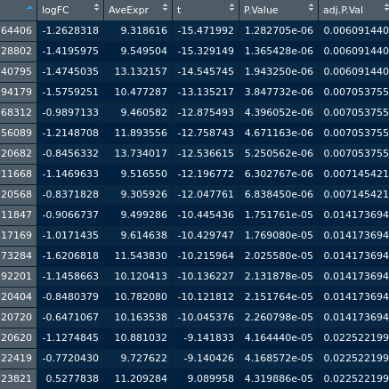
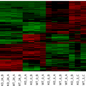
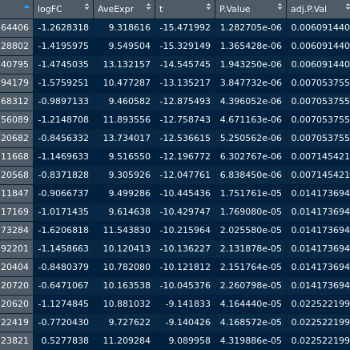
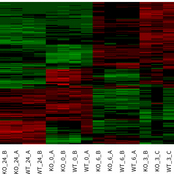

저는 생물학 연구원이라는 장래희망을 갖고, 고등학교에서 생명과학I, 생명과학II와 함께 고급 생명과학을 공부하고 의생명과학을
전공하게 되었습니다.
대학교에 입학하고 일반생물학, 일반화학을 수강하였고 1학년 여름방학 부터 면역학 연구실에서 인턴을 하게 되었습니다.
인턴 기간동안 'Cell culture', 'Cell preezing', 'cell 녹이기', 'PBMC 분리', 'DNA extraction', 'FACS' 등을 경험했습니다. 간단하게 요약하면, K562 cancer cell line을 culture하면서, immune cell의 cytotoxicity를 보고싶을 때 PBMC를 분리합니다. 그 후 co-culture를 해준 후, beads/dye를 통해 염색합니다.
염색된 것은 FACS 기계를 통해 관찰 할 수 있고, 프로그램을 통해 사용한 PBMC의 cytotoxicity를 확인 할 수 있습니다.
신체적인 제약과, 이후 수강한 "세포생물학", "생화학", "통계"으로 인해 관심분야가 조금 변화 되었습니다. 바로 통계 분석을 통한 유전체 분석이었습니다. 자세한 내용은 bioinformatics에서 다루겠습니다. 3학년에는 "통계학","분자세포학","대사체학","조직학" 등을 수강하며 생물 도메인의 전문지식을 함양하고 있습니다.
대학교에 입학하고 일반생물학, 일반화학을 수강하였고 1학년 여름방학 부터 면역학 연구실에서 인턴을 하게 되었습니다.
인턴 기간동안 'Cell culture', 'Cell preezing', 'cell 녹이기', 'PBMC 분리', 'DNA extraction', 'FACS' 등을 경험했습니다. 간단하게 요약하면, K562 cancer cell line을 culture하면서, immune cell의 cytotoxicity를 보고싶을 때 PBMC를 분리합니다. 그 후 co-culture를 해준 후, beads/dye를 통해 염색합니다.
염색된 것은 FACS 기계를 통해 관찰 할 수 있고, 프로그램을 통해 사용한 PBMC의 cytotoxicity를 확인 할 수 있습니다.
신체적인 제약과, 이후 수강한 "세포생물학", "생화학", "통계"으로 인해 관심분야가 조금 변화 되었습니다. 바로 통계 분석을 통한 유전체 분석이었습니다. 자세한 내용은 bioinformatics에서 다루겠습니다. 3학년에는 "통계학","분자세포학","대사체학","조직학" 등을 수강하며 생물 도메인의 전문지식을 함양하고 있습니다.
Plink 프로그램과 함께 시작한 프로그래밍 언어는 R language 였습니다.
데이터 전처리와 데이터에 대해 t-test와 같은 통계 처리를 해주고, 분석업무를 해야 할 때는 R을 사용했습니다.
그 결과 R programming에 능숙하게 되었고, 데이터를 다루고 보는 시각에 대폭적인 발전이 있었습니다. 또한 computer적 사고로 논리에 기반한 사고 를 키울 수 있었고, 다른 컴퓨터 언어에 대한 거부감을 없앨 수 있었습니다.
통계처리를 위해 익힌 만큼 R을 사용함과 동시에 통계에 대한 감각도 크게 향상되었습니다. 최근에는 본격적인 통계공부를 계획하고 있고 다른 컴퓨터 언어도 배울 계획에 있습니다.
 
그 결과 R programming에 능숙하게 되었고, 데이터를 다루고 보는 시각에 대폭적인 발전이 있었습니다. 또한 computer적 사고로 논리에 기반한 사고 를 키울 수 있었고, 다른 컴퓨터 언어에 대한 거부감을 없앨 수 있었습니다.
통계처리를 위해 익힌 만큼 R을 사용함과 동시에 통계에 대한 감각도 크게 향상되었습니다. 최근에는 본격적인 통계공부를 계획하고 있고 다른 컴퓨터 언어도 배울 계획에 있습니다.
 
처음 Bioinformatics를 시작한 GWAS분석부터 기초통계, 통계학, 여러 유전체 통계 분석 방법
등을 공부하면서 자연스레 통계학에 관심이 가게 되었습니다.
덕분에 간단한 가우시안분포와 T분포, F분포 등에 따른 적합성 검정, T-test, 등분산 검정, 독립성 검정 그리고 p-value에 대한 지식 등 기본적인 통계학 지식들을 2학년안에 어느정도 기본기로 다질 수 있었습니다.
GWAS분석을 해보며 알게된 Regression analysis, Correlation analysis 등 다양한 통계적 분석 방법을 공부하고 습득하였습니다. 이에 본격적으로 통계 공부를 위해 "An Introduction to Statistical Learning" 서적을 통해 공부할 계획에 있습니다.
덕분에 간단한 가우시안분포와 T분포, F분포 등에 따른 적합성 검정, T-test, 등분산 검정, 독립성 검정 그리고 p-value에 대한 지식 등 기본적인 통계학 지식들을 2학년안에 어느정도 기본기로 다질 수 있었습니다.
GWAS분석을 해보며 알게된 Regression analysis, Correlation analysis 등 다양한 통계적 분석 방법을 공부하고 습득하였습니다. 이에 본격적으로 통계 공부를 위해 "An Introduction to Statistical Learning" 서적을 통해 공부할 계획에 있습니다.
첫 입문 과정을 "GWAS"라는 알고리즘을 통해 시작하게 되었고
많은 지식을 배울 수 있었습니다. 이 때 "PLINK", "REGULOMEDB" 등 다양한 기술을 익힐 수 있었고 무엇보다 통계적
감각을 만들 수 있었습니다.
현재는 생물정보학 연구실에서 유전체 분석을 하고 있으며, 주로 "R Language"와 "Linux"를 통해 "DEG분석", "GO", "KEGGpathway", "Linux OS" 등을 익히고 있습니다. 진행해보았던 연구는 다음과 같습니다.
1. Glioma, risk, protective 선별~ 뭐 밝혀낸 것. (포스터 1학년꺼2학년꺼 두개 첨부.)
2. POF와 관련되는 SNP을 선별하고, 해당 후보군들의 기능분석으로 POF의 질환 메커니즘을 해석.
3. Breast Cancer 환자들의 예후 예측 후보마커들이 다른 30여 종의 암종에서 어떤 발현패턴을 보이는지 분석함.
4. EGR1이 Knock-Out 된 mice와 Wild type mice 간의 microarray data 분석을 통해 EGR1이 KO 됐을 때, 어떤 생물학적 기전들이 변화하는지 분석.
현재는 생물정보학 연구실에서 유전체 분석을 하고 있으며, 주로 "R Language"와 "Linux"를 통해 "DEG분석", "GO", "KEGGpathway", "Linux OS" 등을 익히고 있습니다. 진행해보았던 연구는 다음과 같습니다.
1. Glioma, risk, protective 선별~ 뭐 밝혀낸 것. (포스터 1학년꺼2학년꺼 두개 첨부.)
2. POF와 관련되는 SNP을 선별하고, 해당 후보군들의 기능분석으로 POF의 질환 메커니즘을 해석.
3. Breast Cancer 환자들의 예후 예측 후보마커들이 다른 30여 종의 암종에서 어떤 발현패턴을 보이는지 분석함.
4. EGR1이 Knock-Out 된 mice와 Wild type mice 간의 microarray data 분석을 통해 EGR1이 KO 됐을 때, 어떤 생물학적 기전들이 변화하는지 분석.
2학년 2학기에 수강한 웹 프로그래밍 교양과목은 제가 평소에 관심있었지만 생물학이라는 도메인에 밀려 시도해보지 못한
웹 프로그래밍을 시작하게 해주었습니다. 저는 R 코딩 할 때와 유사하게 코드를 짜면서 재밌고 취미생활을 하는 기분이 들었습니다!
Javascript를 겸하여 더 고퀄리티의 웹 개발을 시도할 계획이며, 스타트업 회사들의 웹 페이지 외주받는 것이 목적입니다. 2학년 겨울방학 때엔 스타트업 회사의 웹 개발을 인턴으로 배워볼 계획에 있습니다.
추후 이 IDcard를 보완하여 저의 웹 포트폴리오로 발전시킬 예정입니다!
Javascript를 겸하여 더 고퀄리티의 웹 개발을 시도할 계획이며, 스타트업 회사들의 웹 페이지 외주받는 것이 목적입니다. 2학년 겨울방학 때엔 스타트업 회사의 웹 개발을 인턴으로 배워볼 계획에 있습니다.
추후 이 IDcard를 보완하여 저의 웹 포트폴리오로 발전시킬 예정입니다!